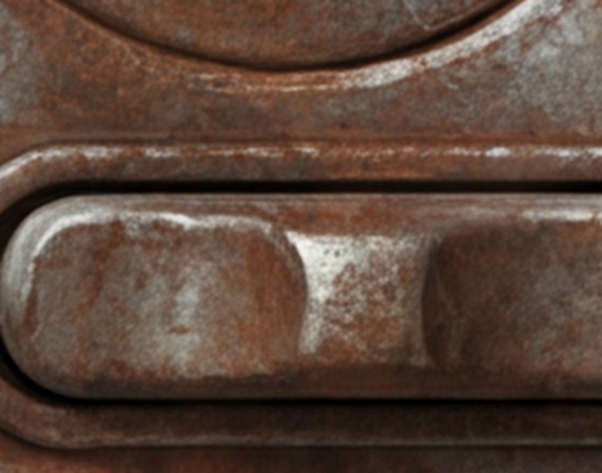
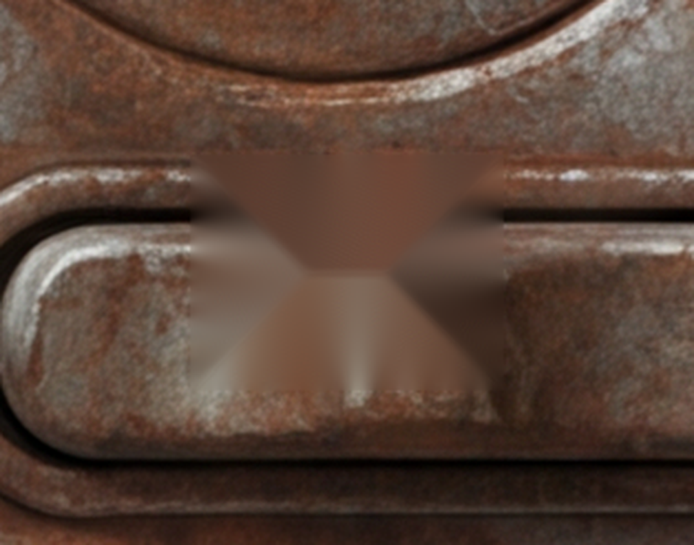
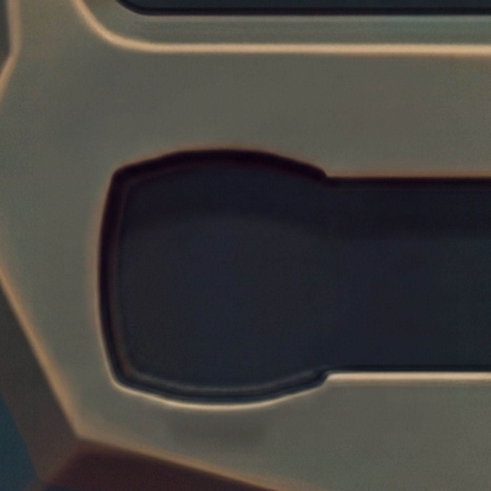
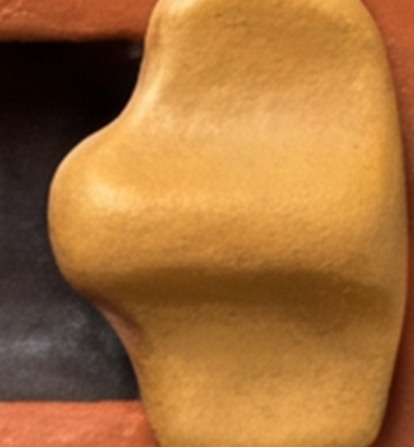

ok.When a slider groove is flagged, erase12.py crops a square window around
the defect (square by construction, so the send/receive aspect always matches — no separate
aspect-repack logic needed, per this repo's own ai-image-coords-rule), sends it to a
targeted nano-banana-pro edit call ("remove the handle, continue the channel's own
material — match the channel's cross-section, not the removed part's silhouette"), and composites
the result back with a soft ~12% alpha-ramp margin so the crop boundary doesn't read as a seam.
It only runs on gates that actually fire — not a blanket pass over every skin — and costs
roughly $0.05–0.10 per model-edit call.
Classical inpaint was tried first, at $0, and it failed on every skin tested. OpenCV's
inpaint (both TELEA and Navier-Stokes, several radii) consistently produced a visible
"X"-shaped smear — the crop rectangle's borders are too content-diverse (carved decorative
material on one side, flat channel floor on the other) for PDE-based inpainting to bridge. Here is
one of those failures, still on disk, from fallout-vault's first classical attempt at 23:29:11 —
not shown as a fixed skin, shown as the exhibit for why the model-edit escalation exists:


classical inpaint: FAILED, $0 spent, not shipped — click either crop for full-res
Gate mechanics matter here: extract12.py's automated baked-thumb:seek
gate scores a brightness run-length inside the groove (flags when 0.05 ≤ run_frac ≤ 0.28
AND peak ≥ 1.17, both measured against the groove's own raised-material brightness,
not an absolute constant). By its OWN calibration comment in extract12.py, that gate
is deliberately blind to two shapes of bake: a thumb sitting at the groove's END CAP
(outside the region it walks) and one broad enough to read as a smooth material gradient rather
than a discrete blob. erase12.py runs its own, separate groove-shaped locator (a
1-D column-median/std profile) specifically because of that blind spot — it is not a reuse of the
gate. All 4 skins below were originally named by the human review round, not by this gate; the
gate reading shown is the independent, post-erase confirmation re-run after the fix.
peak stayed above the 1.17 bar through 2 rounds of prompt
tightening (0.080/1.29 → 0.081/1.31). What finally closed it was a direct $0 pixel
correction pulling the still-flagged run back toward the groove's own floor tone.| skin | verdict | post-erase gate | model-edit calls | est. cost |
|---|---|---|---|---|
| diablo-gothic | erased, clean | run_frac=0.516 peak=2.56 ok | 1 | ~$0.05–0.10 |
| fallout-vault | erased, clean | run_frac=0.081 peak=0.52 ok | 1 + $0 pixel pass | ~$0.05–0.10 |
| n64-cutscene | erased, clean (2nd try) | run_frac=0.000 peak=1.38 ok | 2 | ~$0.10–0.20 |
| wc-goldshield | erased, clean | run_frac=0.000 peak=0.75 ok | 1 | ~$0.05–0.10 |
| claymation | false positive — not touched | run_frac=0.147 peak=1.27 flag=true (disputed, §4) | 0 | $0 |
| fallout-pipboy | not reached this session | — | 0 | $0 |
fallout-pipboy is the 6th skin named in the review round;
another concurrent session was actively re-rolling its paint.png mid-session
(confirmed by a sha mismatch against the review's recorded sha), so it was left untouched per this
repo's worktree-isolation rule — re-run erase12.py assets-fallout-pipboy once that
settles.
Brightness-only verification is not shape verification. The first erase attempt on n64-cutscene did remove the bronze cap, and the re-detect call read it as clean (no body-brightness run left). But looking at the actual crop shows the groove now bulges wide exactly where the cap used to sit, tapering back to the channel's real width past that point — the model had matched the REMOVED PART's rounded silhouette instead of the channel's own constant cross-section. Nothing in the brightness-based gate can see a shape distortion like this; it only showed up because someone looked at the crop.

Fixed by adding one line to the erase prompt: "match the channel's own cross-section, not the
removed part's silhouette." The second pass came back clean on the first try. Lesson recorded
in TODO.md for anyone else extending erase_model(): a passing re-detect
does not mean the shape is right — look at the crop.
The detector's candidate locator fired on claymation's groove too. Direct high-zoom inspection — both before and after attempting a fix — shows a genuinely EMPTY channel; the shape flagged is the groove's own raised clay-frame moulding (it continues past the crop edges as one continuous piece of material), not a separate baked thumb with its own closed silhouette like the four cases above.

Worth flagging, not fully resolved: extract12.py's OWN baked-thumb
gate agrees with the flag on this skin (run_frac=0.147 peak=1.27 flag=true) — a
shared false-positive between both detectors on the same mid-groove highlight gradient. But that
gate's own calibration comment (written 2026-07-11, before this session) lists claymation's
0.147 among its confirmed true-positive calibration examples, alongside
fallout-vault and fallout-pipboy. This session's closer visual inspection disagrees with that
older call. Neither is proven wrong here — this is an open discrepancy between an older
calibration pass and this session's crop-level look, left for whoever owns
extract12.py's gate to resolve, not silently overridden.
4 of 4 named, reachable skins repaired — diablo-gothic, fallout-vault, n64-cutscene,
wc-goldshield all now read a clean groove both by eye and by extract12.py's
independent post-erase gate. 1 flagged skin (claymation) correctly left untouched as a
disputed false positive rather than erased on spec. 1 skin (fallout-pipboy) not reached
this session due to a live concurrent edit elsewhere.
Method that actually worked: targeted model-edit, not classical inpainting. Every classical OpenCV attempt on every skin tested produced the same X-shaped smear (§1) and was rejected before shipping; every fix that stuck was a nano-banana-pro edit on a square crop, with one skin (fallout-vault) needing an extra $0 pixel-level finishing pass and one (n64-cutscene) needing a second model call to fix a shape bug the brightness gate couldn't see.
Mainline consequence — SEEK_CLAUSE_LITE: with a working repair net in
place, genskin.py gained a flag (default OFF) that collapses the seek-groove's
heavy, multiply-duplicated "SEEK IS JUST AN EMPTY SLOT" prompt hardening down to one plain clause.
Verified byte-identical to the old prompt when off (prompt_len unchanged at 11454
chars). Not flipped on yet — that trade (a shorter, less constraining prompt vs. a possibly higher
up-front bake rate that erase12 must now always catch) needs a real batch's worth of validation
first, not a one-off repair pass on 4 known-bad skins.